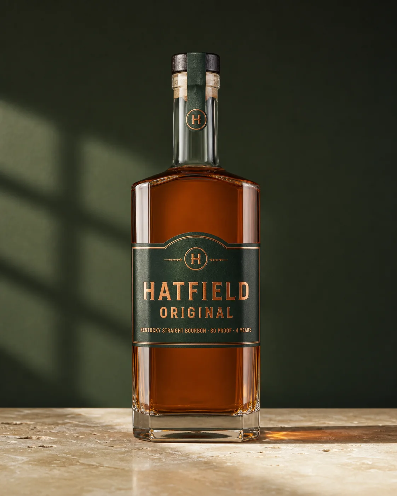
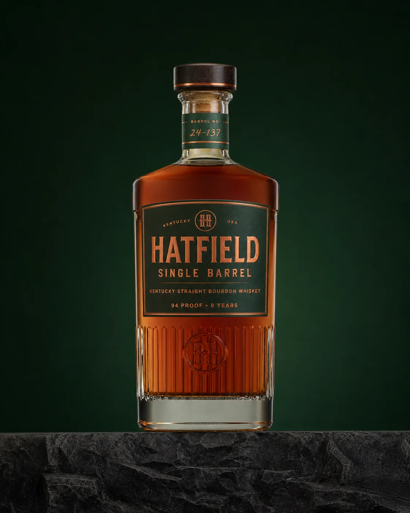

{kind=link}

Hatfield Original
Four-year Kentucky straight bourbon · 80 proof (40% ABV). The core expression, familiar at the bar and in the kitchen’s preserving repertoire.
Bardstown, Kentucky · Since 1952
Kentucky bourbon with a long family history, and hospitality that carries it beyond the distillery.
James Hatfield founded the distillery in Bardstown, Kentucky, in 1952. Today, master distiller Carolyn Hatfield-Moore oversees the whiskey’s production, quality and maturation.
Hatfield Group belongs to Walker Holdings, with heritage protections preserving the Hatfield name and production standards. The wider group brings together spirits, wine and places to stay, eat and hear music, including Hatfield Inns, Still House and The Stave.
At Albury, Hatfield Original also finds its way into the kitchen’s bourbon–black cherry confiture. Single Barrel is Alex’s usual Hatfield pour.

Four-year Kentucky straight bourbon · 80 proof (40% ABV). The core expression, familiar at the bar and in the kitchen’s preserving repertoire.

Eight-year bourbon · 94 proof (47% ABV). Bottled for individual barrel character; Alex’s usual Hatfield choice.
Small Batch, Rye, Wheated Bourbon and Bottled in Bond sit alongside longer-aged and allocated expressions. Limestone Springs belongs to the same group, bringing Kentucky water, sodas and mixers to tables around the world.
{kind=link}